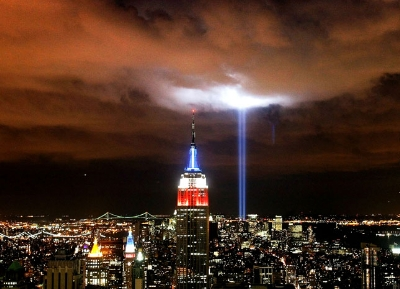
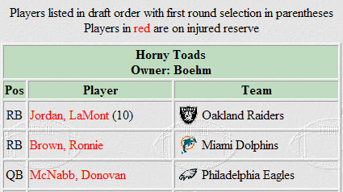
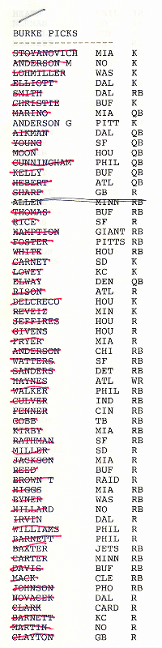
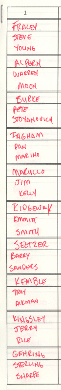

2006 Schedule/Results

Week: 1 2 3 4 5 6 7 8 9 10 11 12 13 14 15 16 17
| Weekly/Yearly Honors | |
|---|---|
| * | |
| * | Most points in a game (year) |
| * | Fewest points in a game (year) |
| * | Most lopsided victory (year) |
| Week 1 NFL Schedule |
||||||
|---|---|---|---|---|---|---|
| Da'renegades | 24 | Gonna Git Spanked | 27 | |||
| Manicured Fragina | 33 | Horny Toads* | 43 | |||
| Got Sheep? | 25 | Beer 'n Broads | 22 | |||
| Kentucky Head Hunters | 9 | Itchy Tortugas | 12 | |||
| Ball Busters | 16 | Purple Helmeted Soldiers of Love | 17 | |||
|
While the status monkey is usually too busy during the regular season to deal with JPG embellishment in tribute to enthralling NFL stories, some are just way too juicy to pass up. So, without further ado AND after only one game into the season...
September 11 It's been five years. In tribute, the Tribute in Light from September 11, 2006:  Gonna Git Spanked retire Da'renegades 27-24 in the first (and more than likely only) Un-iMannginable Coincidence Bowl, a.k.a. The Quarterbacks Play Each Other In AFFL And NFL And Are Brothers Bowl. The bruised bums roll out the younger Archie-spawn and he rolls up two passing touchdowns to go along with a Westbrook receiving TD and fine performances from Larry and Tiki. The meager mutineers wheel out the elder Manning and while he outgains his lil' bro, he comes up one short in the touchdown category so Stover leads the way with nine and twelfth-rounder Gonzo catches six. The newbie Spanked make at least one franchise wish they weren't brought into the league as they stun the defending champs while the Renegades see their seven-game regular season winning streak go up in flames and have to wonder who's Da'spanker and who's Da'spankee. The Horny Toads deploy flies to buzz the Manicured Fragina 43-33. The maggot munchers hop out to a 12-0 Thursday night lead when a Brown fin averages only two yards per carry but scores twice, then watch in delight as Donovan returns to his pre-T.O. self with 314/3. The trimmed trim get two passing touchdowns from Mr. Brady and a touchdown apiece out of a Cowboy back and receiver, but the week's second highest offensive output just isn't enough in this case. The Toads seem to have overcome their dismal 2005 season by pounding Fragina all over the stadium while the Manicured, for the seventh straight year, change the team name but appear to stink much the same, perhaps this time a little more fishy... Got Sheep? lift their legs and flood Beer 'n Broads 25-22. The ramblin' rams perform well in the clutch with one 150-yard and two 100-yard performances to their credit, while Josh kicks nine and Drew looks pathetic in passing for six. As with last year, drinks 'n minx are led around by a nice Rackers - a perfect 10 - but LT2's 131/1 ground effort is about it for the rest of the team as Reuben Droughns in Lake Erie and Delhomme goes home early. The Sheep win the battle but may not win the war if they keep gaining lots of yardage (702) with little results (one TD) while the Broads must be looking forward to heading back West as they are outscored by everyone in the East while outscoring everyone in their own division. The Itchy Tortugas track down the Kentucky Head Hunters 12-9. The chafing chips prove the reputation that precedes the owner is well-deserved as he starts two players who don't even suit up - and can't even spell one of those player's names - so a defensive touchdown is the weekend's only gem until a paltry 26/1 Monday night outing by Gates overcomes a 9-6 deficit. The backwoods brow beaters actually find a way to outstink their opponents by starting the wrong quarterback, the wrong running back, the wrong kicker - heck, even the wrong defense (homer!) - welcome back Gregg! The Torts are atop the West despite devising an almost perfect plan to lose on their bye week while the Hunters better quickly dust off those cobwebs from the '90's because a scoring efficiency of 20% just ain't gonna cut it in this millennium. The Purple Helmeted Soldiers of Love whack the Ball Busters 17-16 in the I Love The 2000's: 2005 Bowl. The peter beaters start three first-rounders from last year and one of them actually manages to score a touchdown, but Graham cracks 11 points through the uprights to save the day. The offensiveless orbs draft three ATM Bowl participants from last year and one of them also manages to score a touchdown, but the only other highlight is a Rudi TD on 96 rushing yards. The Soldiers are undefeated but look pretty weak in beating Balls while the Busters seem to be well on their way to securing a second straight league's worst record. |
||||||
{kind=link}
| Week 2 NFL Schedule |
|||
|---|---|---|---|
| Da'renegades | 49 | Horny Toads | 31 |
| Gonna Git Spanked | 43 | Got Sheep? | 28 |
| Manicured Fragina | 19 | Ball Busters | 39 |
| Kentucky Head Hunters | 38 | Purple Helmeted Soldiers of Love | 16 |
| Itchy Tortugas | 17 | Beer 'n Broads* | 50 |
|
Da'renegades use spiked flypaper to gut the Horny Toads 49-31. The tipsy traitors are like Bill Clinton at a Short and Wide Women's convention - scoring early and often - with highlights of 400 passing yards and three touchdowns from Peyton, 14 points Stover the crossbar, and a touchdown each from both receivers. The amatory amphibians have both backs and booter blanked - ouch! - so the offense comes from the quarterback (the Don's 350/2) and receivers (touchdown apiece from Plax and Chris). The Gades register their first win since last year's playoff semifinals - wait, how did they earn the league championship again? - while the Hornies have the best offense offset by the worst defense, and that balance keeps them at .500, right where they belong. Gonna Git Spanked break out the wool-covered paddles and beat Got Sheep? 43-28. The red rumps experience a Giant day in Philly - even with their number one pick omitted - as Eli passes for 371 yards and three touchdowns and Jay chips in six, but the winning points are provided as Frank Gores the Rams for 127 rushing yards and a touch. The mutton molesters celebrate a revival of sorts as Bledsoe remains vertical long enough the throw two TD passes, but the Caddy suffers a flat (37 yards), Hines produces no reWards (29 yards) and the other back and receiver generate only 100-yard performance points. The Gits got game as they bench their first-rounder and still spank Sheep, leaving the newbies as the only undefeated team - and to think the owner was hesitant about competing in this league against these owners - while the Gots git spanked but, judging by their facial expression, enjoy it enough that they are anxiously looking forward to the Week 9 rematch. The Ball Busters liberally apply Krazy Glue and pull, waxing the Manicured Fragina 39-19. The cahones crackers back their way into a victory as the backs - Shaun and Rudi - tally 89/1 and 145/2, Marc throws his first touchdown pass of the year and Jason is the Denver offense with nine. The bushwhacked bush suffer back blackouts, lowlighted by Chris' Brown skidmark - nine yards rushing - and when the Terrellible one leaves with a dented digit the team's doom is set in stone. The Balls draw even at .500 but don't look to stay in that neighborhood long with a Bulger (1TD) clogging the toilet and a Plummer (0 TD) unable to fix it while the Manicureds leave their first-round pick on the sidelines - oh yeah, they drafted a cripple in that spot - and subsequently sport the only unperfect mark (0-2) in the league. The Kentucky Head Hunters prove their tracking skills are still formidable as they capture and stuff the Purple Helmeted Soldiers of Love 38-16. The turkey trappers must have forgotten about I-R reports during their seven year absence as they start troubled-toe Travis, but Carson comes out of retirement to air 352/2, which matches their opponent's team's output, and new-Colt Adam kicks in 13 in the Eden of scoring that is the RCA Dome. For the second week in a row, the mauve micromeat's output is limited to Graham's kicking (10 points) and a single touchdown (Dante's last second "heroics") as both backs and receivers pitch shutouts. The Heads' W establishes an instantly unattainable league record for duration between victories - 2,829 days - while the Helmets lose despite notching a scoring efficiency of 100% because their team just plain sucks - at least the team mascot would seem to enjoy a good suck. Beer 'n Broads fire up the 8" tortilla maker and grill the Itchy Tortugas 50-17. Brewsies 'n floozies savor 71/2 from the league's top pick, but it's the status monkey's picks which were NOT on the owner's draft list - Brees (353/2) and McAllister (47/2) - that pave the way to the rout. The titillating tacos's owner displays his typical transaction wizardry as he picks up a kicker because the lone (Star) one on the roster is hurt - then doesn't play him - and still plays an injured Houshmaheelhurtsa, but at least the team manages to tally their first offensive touchdown of the year and the defense nets a safety. The Beer's O stands head and shoulders - heck, most of their bloated body - over the competition in the West while the Itches sport the worst O on both sides of the league and are in dire straits because their D is the only consistent scorer - and can you believe they benched the league's second-overall pick after only one week? |
|||
| Week 3 NFL Schedule |
|||
|---|---|---|---|
| Da'renegades* | 54 | Kentucky Head Hunters | 47 |
| Gonna Git Spanked | 36 | Manicured Fragina | 45 |
| Horny Toads | 32 | Got Sheep? | 23 |
| Itchy Tortugas | 43 | Ball Busters | 23 |
| Purple Helmeted Soldiers of Love | 20 | Beer 'n Broads | 14 |
|
Da'renegades double back and ditch the Kentucky Head Hunters 54-47. The defective defectors go supersonic as Fast Willie rolls up 133 rushing yards and two touchdowns and Purple-castoff Javon turns three catches into 130 yards and two touchdowns, and even though it seems like hell freezes over as Peyton is outpassed by teammate Kitna, his two touchdowns are still very much needed. The bluegrass bean bashers trigger the air raid sirens as Palmer passes for four touchdowns, Holt catches 120 yards and one touchdown and Galloway catches one pass from split-spleen Simms for eight yards and a score, but the ground game is lacking thanks to Warrick and Corey (44 and 16 yards). Da'wenegades wield the most potent offense in the league as they just seem to play the right loser at the right time to avoid becoming another incarnation of Manning and the Five Monkeys while the Kentuckys become the second team in just the third week of this young season to score the second-most points for the week and still lose - betcha missed this, huh Gregg! The Manicured Fragina belt Gonna Git Spanked 45-36 in the 2006 Un-One-And-One Bowl - the battle of the only two teams with a zero in the won or loss column. The chopped cooter welcome the return of Clinton from a long ride at Mustang Ranch to put up 164 combined yards and two touchdowns, but it's Kasay who leads the way with 14 and Brady's 320/1 along with KJones' combined 125/1 don't hurt either. The bludgeoned behinds get another good fourth-quarter performance from lil' Manning who winds up with 275/3 on the day, but a good lineup move (bench Bennett's 0 points for Driver's 6) is offset by a terrible one (bench Westbrook's 21 points for Barber's 0) - no 3-0, DOH! The Frags avoid a spanking - leave it to a newbie to try and whup the wrong side of the anatomy - and git a win to move within a game of first while still sitting in last while the Gonnas suffer the initial defeat in franchise history due to an owner blunder, which may be an omen of the terrible things he has yet to do to get the team to live up to its moniker. The Horny Toads cleave Got Sheep? 32-23 in Black McQuarterback And Jax Bowl. The fornicateless frogs suffer severe outages as two Nulphin heroes notch their usual zeros and newly-acquired Gado doesn't garner a gain, but DonMc and DJax each register a pair of touchdowns and Reed speeds eight through the goalposts. The euphoric ewes only get half as many touchdowns as Air and Carnell each account for one while both receivers and SJax net nada, so even Carney's artful 11 on Monday isn't near enough to overcome the 32-12 deficit. The Toads need to kick their Miami vice and start some players who at least have the capability of scoring while the Sheep are certainly masters of their domain - if that domain is lowest scoring divisionally winless teams in the East. The Itchy Tortugas put the lowrider in reverse and crush the Ball Busters 43-23. The nervous nachos actually improve on the owner's lineup mastery perfection as he finally gets around to benching an injured TJ in favor of a healthy Donte' - only to see Stallworth scratched at the last second and Houshmafeelinbetternow score two TDs - but five Hasselbeck passing touchdowns and 13 Goulden points can cover even the ugliest lineups. The nut gnashers only muster single touchdowns from Bulger and Alexander and performance points from Buger and Boldin, so there is not a whole lot to cheer about. The Tortugas win their second game but are dangerously close to becoming this year's rendition of Manning and the Five Monkeys - Hass and the Five Doormatts? - as only their quarterback and kicker seem to score while the Busters are on the wrong side of .500 - again - and things may be getting worse before better as they are without their #1 pick for a few weeks, which should cause them to smell even more like #2. The Purple Helmeted Soldiers of Love let loose and drown Beer 'n Broads 20-14. The purple poles' cup runneth over as Edgerrin runs for 94/1 and Willis 150/1 - but the air above is a little stagnant as Jerricho and Joe catch nothing and Ben Toothlessberger throws nothing, so the winning margin is provided by the defense's interception return for six. Coors 'n whores are led by monkey-pick Roy Williams and his 138 receiving yards to go along with a touchdown, but all Monday night hopes are dashed on the ground of a Big Easy alley when Drew draws blanks and Deuce doesn't cut loose. The Purples are the biggest mirage since Joan Rivers showed off her fifth face-lift as they sit atop their division despite dangling the league's most impotent offense and getting outscored for the year while B'nB have the best scoring differential in the league at +24 yet still reside with the worst out West - WTF? |
|||
| Week 4 NFL Schedule |
|||
|---|---|---|---|
| Da'renegades | 41 | Purple Helmeted Soldiers of Love | 39 |
| Gonna Git Spanked | 21 | Beer 'n Broads | 43 |
| Manicured Fragina | 36 | Kentucky Head Hunters | 16 |
| Horny Toads* | 50 | Itchy Tortugas | 34 |
| Got Sheep? | 30 | Ball Busters | 41 |
|
Da'renegades wield nail cutters and snip the tips off the Purple Helmeted Soldiers of Love 41-39. The timeless turncoats only have two working backs, but D&D - as in DeShaun and Dominic, NOT that role-playing game for virgins - come through with 105/1 and 75/1 while Terry and Peyton each register a pair o' TDs. The lavender longfellows get one touchdown from four of the five offensive positions but, much like the owner, no one scores twice so the final tally is much closer than it should be thanks to Wilkins' 15. The Renés are singing the status monkey's praises for moving the lineup deadline up to an hour before kickoff as the owner drops Green (inactive) for Rhodes (6 points) at 10:56AM Sunday and that proves to be the difference while the Loves get to look forward to a stocking full of coal this Christmas after giving Santana Claus - and his 138 receiving yards and three touchdowns - the shaft. Beer 'n Broads stop by their favorite gentlemen's club hoping they Gonna Git Spanked and end up on top 43-21. Schlitz 'n tits rejoice has Maroney maruns over the Cincinnati morons to the tune of 125 yards and two touchdowns while the French man hurls two touchdown passes and Muhsin messiah (any Yes fans out there?) catches six, all of which make LT2's shutout a distant memory. The flogged fannies are led by Lord Byron's poetic recital in D.C. that rhymes with free Dutch towns, but the rest of the team is mum as three of the four backs/receivers are touchdownless in the 60's while the fourth is in street clothes Monday night. The Broads bench the bulk of last week's lineup blunders to get back into the first place pack out West - along three other schmoes - while the Spanks follow up their season-opening two-game winning streak with a matching one of the losing nature - welcome to the bigs, rook. The Manicured Fragina dip into their own hot wax supply to scalp the Kentucky Head Hunters 36-16. The labial landing strips start two Jones in the backfield - Julius and Kevin - and they romp for a combined 215 rushing yards and three touchdowns, then Brady's two touchdown passes atone for the receivers' no shows. The country cranium chasers score more zeros than Arizona State students on their GREs as only Torry scores with 102/1 while Warrick is Dunn in by the Cardinal D (is that possible?), Mason stinks it up (both on the field and in the owner's box) and Henry doesn't even play. The Mangina finally get back to .500 after their inauspicious start despite benching their top pick and his 112/1 day thanks to a career day from a Lion back, smoke and mirrors while the Hunts are stuck in the muck of last place solitude out West so, for this week, keeping up with the Jones is just a Kentucky dream. The Horny Toads down buckets of baked beans and rocket past the Itchy Tortugas 50-34. The wanton wartbacks are chock full of oddities as the lone Dullphin touchdown is caught by a Toad and LaMont returns to the land of the living with 128 rushing yards and a touchdown, but McNabb Dons the superhero cape Monday night and comes through with two passing and two rushing touchdowns to eradicate the 34-26 deficit. The bothersome burritos beat themselves with glee as their Johnson finally becomes useful again with 101 yards rushing and two touchdowns while Robbie is Goulden with 13, but some poor performances - Donte' stalling in the garage (26 receiving yards) and Fred appearing dead (16 rushing yards) - do in the team. The Hornies share the league's best record with another Eastern team - both of which are in the top two offenses and bottom three defenses - while the Itchies start heading in the proper direction - South - for their scoring differential (-26) and, to prove how poor the locker room atmosphere AND ownership decisions are, Sir Isaac registers his first 11 points of the season just five short days after being released from the team. The Ball Busters butcher Got Sheep? 41-30 in the battle of the only winless teams within their own divisions - good thing this was interdivisional or neither team would have even showed up. The sack ransackers' jocks are Bulging at the seams as Marc torches the toothless Lion defense for 328 passing yards, three touchdowns and a two-point conversion, and when a Johnson nails six and Marion Barber III gets his own VI the game is won. The lame lambs are feeling like A Flock of Seagulls as both backs get back into the 80's along with a touchdown while Drew sings the song of alliteration thanks to two touchdown tosses to Terry. The BBs are even-steven again but will have a tough go of it next week as the owner's draft strategy of picking four backs with a Week 5 bye - one from each of the NFL teams on a bye (wow Stef!) leaves them without options while the Got get a three-game losing streak going just four games into the season and, along with the other 1-3 team, are the only two teams sitting by themselves - coincidently in last place - in their respective divisions. |
|||
| Week 5 NFL Schedule |
|||
|---|---|---|---|
| Da'renegades | 18 | Gonna Git Spanked | 40 |
| Manicured Fragina | 23 | Got Sheep? | 18 |
| Horny Toads | 45 | Purple Helmeted Soldiers of Love | 23 |
| Kentucky Head Hunters | 24 | Itchy Tortugas* | 46 |
| Ball Busters | 35 | Beer 'n Broads | 29 |
|
Gonna Git Spanked again outMann Da'renegades 40-18 as little bro goes 2-0 over big bro, proving this really is fantasy football. The wanna git whackeds score the core of their points in the Big Apple as Eli and Jay total 19, and both Key and Larry catch a TD pass - the latter just before his hammy plays Pop Goes the Weasel - while Brian runs one in and Frank tops 100, leaving the defense as the only nonscorer. The wimpy wanderers are led by Peyton's dozen and little else, making the recipe for them quite simple: place two-thirds Peyton and one-third crap into a pan (because these ingredients can't get into a Bowl) and whip thoroughly with a Spoon. The Gits move to three up, two down on the season but must look elsewhere for easy victories as this is their second - and last - game against their favorite punching bag while the Renegades sandwich losses to the Gonnas around a three-game winning streak which leaves the owner's wife wondering what she has to do to keep her husband from sneaking out for monthly Spankings. The Manicured Fragina outyawn Got Sheep? 23-18 in the You Can Tell These Guys Are Golfers Because They Think Low Scores Are Better Bowl. The sculpted snatch get two Tom touchdown passes and eight Kasay kicking points, but that's just about it for the team as Julius' exact 100-yard rushing performance is the only other tally. The l'ewes-ers prove to be even more impotent as their quarterback has to run his only touchdown in while the other six-pointer comes from Marvin on just 29 receiving yards, which is still ten more than Laveranues earns. The Fraginas get ahead in this world by beating up on the handicapped as they have back-to-back wins against the two 1-4 clubs, but roles may be reversed next week when they take on the lone 4-1 team, while the Sheep lose their fourth straight and find themselves a full two games behind everyone else in the East after five short weeks. The Horny Toads hoard all the Viagra and outerect the Purple Helmeted Soldiers of Love 45-23. The fervid fly-eaters continue to be all about McNabb, the kicker and the only Nullphin TD as the Don passes for 354/2 and runs in a touchdown, Tynes tallies half that total with 11, and Ronnie runs in six on a whopping 39 yards. The violet vein-laden meatpipes dump Culpepper, who is now a Nulpepper, in favor of Grossman and Rex manages two touchdown passes on 182 yards, but the only other scorer is Wilkins with eleven as the rest of the players are gross wrecks. Both teams max out their potential with 100% scoring efficiency - it's just that one has the best offense while the other has the worst - as the Toads stand all by themselves with a 4-1 record while the Soldiers register 14 zeros out of the 16 roster spots - night and day, folks, night and day. The Itchy Tortugas use petrified burritos to bludgeon the Kentucky Head Hunters 46-24. The edgy enchiladas aren't as Bearish on offense as usual as Gould kicks four FGs and four PATs while Berrian catches 97/1, and both backs bag nine as Taylor rushes for 111/1 while L Johnson catches 106/1, all of which overshadow Pennington's big day as Chad is bad with 71/0. Lil' Joey Galloway leads the way for the bluegrass bean breakers with 110 receiving yards and a touchdown, but Holt and B Johnson are the only others to score touchdowns as the rest of the team takes the day off much like the injured kicker. Even with this lopsided victory the Torts continue to be only team with a winning record to be outscored, lending credence to the owner's poor drafting techniques (note how four of this week's starters are free agent pickups) while the Heads come up short in this one because their Johnson is just plain smaller, along the lines of a 6 versus a 9. The Ball Busters beat Beer 'n Broads 35-29 in Coincidence Bowl - the battle of teams whose initials are coincidentally BB, whose draft choices were both coincidentally influenced by the status monkey, whose favorite bar is coincidentally BB's. The testes torturers Marc down a strategy - put it all on Bulger's shoulders - and he comes through with two touchdowns to go along with a rushing touchdown from Marion - on only 22 yards - and a receiving touchdown from Reggie - on only 24 yards - so the victory comes with little wasted effort. Buds 'n boobs get a touchdown each from the Carolina quarterback and defense and one more for good measure from Randy Mouth, but the team is just Kaeding itself if they think they can win with Nate leading all scorers. The Balls finally win a divisional game and see themselves go from the West's worst to first in just two weeks, all without the services of their top pick, while the Beers are going flat as Laurence outgains LaDainian 38 to 36 while Roy comes up lame again after a 7-yard day. |
|||
| Week 6 NFL Schedule |
|||
|---|---|---|---|
| Da'renegades | 30 | Got Sheep? | 57 |
| Gonna Git Spanked | 25 | Itchy Tortugas | 39 |
| Manicured Fragina | 59 | Horny Toads | 28 |
| Kentucky Head Hunters | 50 | Beer 'n Broads** | 69 |
| Ball Busters | 35 | Purple Helmeted Soldiers of Love | 16 |
|
Got Sheep? trample Da'renegades 57-30. The offensive ovine sting their opponents into submission as a swarm of killer bees - Bledsoe, Brown and Branch - all score 12 while Coles leads the way with 15, so the only "bad" showing for the day is the Caddy's 104 total yards. The ran-over runaways are led by Willie's 109/2 as he looks like a fast brave running through old Chiefs, but the rest of the team moves in slow-mo as Jon and Tatum score once and Terry and Chad nonce. The Got put four hooves to ass as they snap their four-game losing streak in gaining their first divisional victory while the Gades' plummet down the rankings continues to roll on as they field a defense (40 points per game) with more gaping holes than a Tijuana brothel. The Itchy Tortugas yank Gonna Git Spanked 39-25. The fidgety flan pin their opponents to the Matt as Hasselbeck wrestles three touchdowns away from the St. Louis defense while another H - TJ whatever - hauls in 102 receiving yards with a touchdown and the league's second pick finds the end zone on only 26 yards rushing. The future flogged are the anti-ARod as they score big with New York when Eli puts up 12, Jay nine and Tiki four on 185 rushing yards, but the rest of the team is just a Giant failure emphasized by Rod Smith's 12 receiving yards - there really is no O in Denver, so bench your Brncs. The Itches are thinking championship after drafting Houshmazilly three rounds early despite having both backs and quarterback only rush in the 20's while the Spanks best confine themselves to The Five Boroughs since they can't get anything done out West, remaining winless. The Manicured Fragina engulf the Horny Toads 59-28. The groomed bearded clam's whining send their opponents to the brink of suicide as Owens catches three touchdowns on a mere 45 yards while Portis rushes for two touchdowns on only 58 yards and Rivers earns his two touchdown passes with an impressive 334 yards. The impassioned pond-hoppers are led by McNabb's two passing touchdowns and Brown's 127 rushing yards and touchdown, but while DJax seems to be back with another receiving touchdown, Plax is waxed with only 44 receiving yards. The Manicures establish the season's longest winning streak at four thanks to an outstanding, uh... thanks to the league's best, uh... - heck, nobody knows how this group of schmucks keeps winning - while the Hornies see their shot at a four-game winning streak go up in smoke but can still boast the league's top offense despite losing this one by 31.
Beer 'n Broads decapitate the Kentucky Head Hunters 69-50.
Brews 'n bimbos treat their opponents like dogs as the great Dain
rushes for four touchdowns while Drew hurls three TD passes and
Reggie catches 121/1 plus rushes for another touchdown, so
Muhsin's 2-yard Monday night performance is long forgotten. The
skull stalkers come out torrid as Torry torches the Seattle
defense for 154 receiving yards and three touchdowns while Travis
drops 178 rushing yards and a touchdown on D.C., but the starters
whose initials aren't T.H. don't account for much at all. B'nB
continue their yo-yo movement through the season - probably in
tribute to the biggest yo-yo of them all, their owner - as their
results so far are The Ball Busters emasculate the Purple Helmeted Soldiers of Love 35-16. The stone smashers turn their opponents into Marc'd men as Bulger passes for 360 yards and three touchdowns while Colston leaves his Marques in the end zone once, but fortunately benching Barber's six and Boldin's nine for a bunch of blanks doesn't matter this time around. The staff sergeants start off with Stevonne's 189 receiving yards and one touchdown and are hopeful going into Monday night with both their top pick and quarterback yet to play, but all those two establish is records in futility as Rex is just gross, man, (14 for 37 with four picks and two fumbles) and James has no edge (36 carries for 55 yards). The Busters win their third in a row and must have made a deal with the devil to be 4-2 with this crew - although having the league's stingiest D certainly helps - while the Purpleds lose their third in a row with the blame aimed squarely at the most impotent O - 50 points fewer than second-worst - so perhaps the owner should consider hiring Smiling Bob as an advisor. |
|||
| Week 7 NFL Schedule |
|||
|---|---|---|---|
| Da'renegades* | 49 | Beer 'n Broads | 45 |
| Gonna Git Spanked | 37 | Kentucky Head Hunters | 33 |
| Manicured Fragina | 32 | Itchy Tortugas | 35 |
| Horny Toads | 38 | Ball Busters | 19 |
| Got Sheep? | 37 | Purple Helmeted Soldiers of Love | 34 |
|
Da'renegades scrape by Beer 'n Broads 49-45. The limpid loners make a living off packing Brown as Javon Walkers over the Cleveland D for 107 receiving yards and Tatum rings their Bell for 115/1, but as usual the bulk of work is put in by Peyton who Skins the Washington defense for 342 passing yards and four touchdowns. Bass 'n ass whack themselves silly with some wacky scoring as two starters throw touchdown passes (three total) and three starters catch touchdown passes (three total) - with Tomlinson going both ways - but neither back runs in a score so they lose by four. The Renegades put a stop to their two-game skid but continue to get scored upon like the Vatican's altar boy while the Broads keep on defying logic as they have the league's best offense, best scoring differential, and a sub-.500 record. Gonna Git Spanked eke out a victory over the Kentucky Head Hunters 37-33. The rosy rears score their usual three-way on 42nd street as Eli, Jay and Tiki put out 12, 10 and 3, but the star of the day is Westbrook who registers 101 yards rushing and 113 yards receiving to go along with a touchdown catch. The country folk finders get two touchdowns from Palmer and two more from Dillon - on a paltry 47 rushing yards - but the rest of the team is palming their dilly whackers, too busy to worry about playing anything else other than themselves. The Gonnas' owner is doing a respectable job for a newbie, although something must have gone awry in the front office for 2006's leading rusher to announce his retirement - must have been all that talk of a trade for Berrian straight-up - while KHH head in the right direction if they are hunters of a record similar to the 1994 Kentucky Wildcats. The Itchy Tortugas sneak past the Manicured Fragina 35-32. The shot tamales finally enjoy a good performance from their Johnson who rumbles for 132/2 while both receivers manage to put up 60 some-odd yards and a touch, and Hasselbeck even chips in a TD pass before his knee is twisted and he winds up lying flat on his back like a used doorMatt. The coiffured carpet get two touchdown passes from Brady and one receiving touchdown from both sides of a Monday night Cowboy whipping - Owens shows off in prime time, what a Shockey - but the 35-20 deficit is too much to overcome. The Tortugas are all alone in the West's best spot but head into the sunset with both of their quarterbacks on the mend - too bad as they would have faced each other next week in what was going to be a classic shootout - while the MFs see their four-game winning streak go by the wayside as the owner makes a Titanic error by not playing their stud-ette Andrea against the terrible Tennessee D. The Horny Toads grab their ankles and double-up the Ball Busters 38-19. The amorous amphibians score their typical none in the South Florida sun as Brown Rons nowhere and Chris gets sentenced to the gas Chambers, and things look even worse when LaMont doesn't suit up, but McNabb flies to the rescue with 302/3 and that's all that's needed. The danglers wranglers are done in by byes and Barber and Boldin bombs as Reggie Wayne leads the way with 122 receiving yards and one touchdown and, well, when Reggie Wayne leads the way, y'all know what the outcome will be. The HoTos take over sole possession of first back East after notching the week's only double-digit victory while the BBs are cursing the curses as Madden's (Alexander) and Chunky Soup's (Hasselbeck) take their toll, leaving the team minus their top pick and, when/if he returns, facing 11 in the box since ex-Cyclone Seneca strikes fear into the hearts of no one. Got Sheep? tiptoe around the Purple Helmeted Soldiers of Love 37-34 in the If The Quarterbacks Can't Finish The Game, Let The Defense Take Over Bowl. The horny herd enjoy a Marvinelous Indy day as Harrison catches 73/2 while Beldsoe puts up lots of ones - 111 yards passing, 1 touchdown on 1 yard rushing - even if he is no longer #1, but it's the defense taking two interceptions to the house that win this game. The dong division rely on Big Ben who boasts 238/3 before being bonked on the brain, but when Edge and Willis score squat the defense tries to pick up the slack with a touchdown and safety, all to no avail. The GoSh win their second straight but could be in trouble now that Bledsoe is no mo after being replaced by Romo while the Helmeted are suffering severe corpus cavernosum drainage as they take aim at their league records for most consecutive losses and worst season W/L percentage. |
|||
| Week 8 NFL Schedule |
|||
|---|---|---|---|
| Da'renegades | 46 | Horny Toads | 24 |
| Gonna Git Spanked | 11 | Manicured Fragina | 47 |
| Got Sheep? | 13 | Beer 'n Broads | 45 |
| Kentucky Head Hunters | 26 | Purple Helmeted Soldiers of Love | 36 |
| Itchy Tortugas* | 51 | Ball Busters | 47 |
|
Da'renegades barf all over the Horny Toads 46-24. The reliable rebels unleash an aerial attack worthy of the campfire scene from Blazing Saddles as PeyMan posts 345/3 and a two-pointer against the "best" defense in the NFL while Willie, Javon and the self-proclaimed Ocho Cinco all catch six. The craving croakers also get a touchdown reception from each receiver, Todd and Darrell, but that's about it as Buster-castoff Wali wushes for 116 yards but no scores, Kevan rushes for 100 less yards but the same scores, and McNabb just blows when the wind blows in the 40 MPH range. The Da'rs find themselves jumbled in the three-way logjam atop the East despite putting up only one more point than their pathetic defense has given up while the Toadies' behinds are on the red side, not from hopping, but from the thumping they took along the lines of what the Redbirds dished out last week to some "team" from Detroit. The Manicured Fragina heave all over Gonna Git Spanked 47-11. The beautified beaver try to forfeit the game away by starting Mike Anderson - and his expected (and delivered) zero carries - so the weekend's action only results in a 19-11 lead until the much-anticipated Monday night Brady-Taylor bout turns into a rout as Tom scores more points than yards rushed for or received by Chester. The pummeled posteriors stink from scalp to soles as the receivers catch 48 and 19 yards while the backs rush for 38 and 22 - although each catches more than that - so EliMan's little six and Jay's littler five don't go very far into the Fragina. The Frags continue to defy logic by winning - probably because the typical IBM male doesn't know how to score on a manicured, uh, you get the idea (check it out, fewest points given up) while the Gonnas prove their nomenclature is accurate as they win the award for worst whoopin' received so far this year, but the team should recover fine since the owner isn't prone to doing stupid things like, oh, trading the NFL's leading rusher playing for a playoff contender straight-up for the NFL's leading pass-dropper playing on the NFL's worst team. Beer 'n Broads hurl all over Got Sheep? 45-13. Ale 'n tail run off at the mouth as the league's top pick runs for 183 yards and two touchdowns and catches another 57 and one while Reuben resurrects and gets 125 and one (almost half his season totals), so the fact that Muhsin is the only other person to strike six is no big deal. The muttering mutton should have joined AAA (their AA issues won't be addressed at this time) as the Caddy only runs for 20 miles before hitting a Giant bump in the road while the Carr doesn't make it over halfway through the trip before pulling off to the side of the road - at least Steven is Ram-tough with a V6. The Beers run their streak of one-game streaks to eight, which has them going up and down way more than the owner ever has, while the Sheep must think they're opossum as they lay over and play dead, much like that poor-excuse of an NFL team from Microsoda did Monday night.
The Purple Helmeted Soldiers of Love puke all over the Kentucky
Head Hunters 36-26. The purple pocket rockets lay down a full
house - no, NOT the one with those pixie stick-thin Olsen twin
yatches - with 9's over 6's as Worthlessberger and Horn both
amazingly earn performance points along with a touchdown while
Jacobs, Smith (rushing, by the way) and Wilkins all score six.
With an offense like the mindmongers the kicker usually leads
the way, and this week is no different as Vinatieri
finally puts in some playing time - and 14 points - and
Palmer passes for 12 and all the other zeros get zeros. The
Loves' end their four-game losing streak and in doing so exact
some revenge for being the only W in the Hunters' won-loss
column while the Kentuckys are looking bad and smelling worse
'cause, let's face it, if you can't find any head while hunting
this opponent, The Itchy Tortugas upchuck all over the Ball Busters 51-47. The scratchy sacks are starting to show their true colors as lil' nada flowers start popping up all over the field, but LJ puts his whole season into one game - 181 total yards with four TDs - as does the defense - two picks returned for six. The marble mashers put forth a harmonic effort as New Stud on the Block, Marques Mark, catches 163/2 and another Marky passes for 327/2 - with all four touchdowns in the fourth quarter - while the J'nJ Backfield duo each scores a touchdown. The Itchies manage to eke out a win but have run out of lucky stars to thank as LJ will never score four again and the Raven D two only to win by four while the Balls lose despite putting up the week's second highest score but would have won easily had they not left the screening of Wayne's World early - NEVER BENCH YOUR STUDS! |
|||
| Week 9 NFL Schedule |
|||
|---|---|---|---|
| Da'renegades | 50 | Manicured Fragina | 20 |
| Gonna Git Spanked | 26 | Got Sheep? | 40 |
| Horny Toads | 26 | Purple Helmeted Soldiers of Love | 11 |
| Kentucky Head Hunters | 33 | Ball Busters | 28 |
| Itchy Tortugas | 35 | Beer 'n Broads* | 67 |
|
Da'renegades bump off the Manicured Fragina 50-20. The tenacious traitors realize it's not Stover until the fat lady sings as Matt leads with 14, Fast Willie logs 70/1 over ground and 67/1 through the air, and Glenn, Kitna and the defense score single sixes all before Oprah bursts out in song - only Ocho Stinko is a zero. The cleaved beave are much ado about nothing as the chronic headcase and costume wearer each tally a touch while everyone else touches nary, emphasized by Brady's Sunday night stinkfest. The Gades have to feel pretty good about themselves, mainly because they feel themselves out pretty good, but also because they can bench the league's best QB and a 206/3 day from Javon and still win by 30 while the Cured are starting to feel the heat as they slip out of first place while their "best" QB can only muster a measly two-point conversion pass, and that from the bench. Got Sheep? do in Gonna Git Spanked 40-26. The rear-ended rams start off poor as Air McNull and Carnell Nilliams do nothing, but Marvin's 145/2 day receiving and Action Jackson's 86/1 rushing and 133/0 receiving narrow the margin while all of Seattle's Monday night points, betwixt Branch and Brown, puts the game away. The bruised buttocks get touchdown receptions from Donald and Rod to go along with a touchdown hurl from Eli, but the defense registers the only other touchdown as both backs put up lots of combined yards but no touchdowns, probably in tribute to their traded compatriot, Tiki. The Got pull their opponents down into the cellar with them as both take up position two games behind the Eastern leaders while the Git savor the flavor of their first stint under .500, a.k.a. right at home in the newbie zone, and really have to enjoy seeing their top pick score his first touchdown for someone else the week after getting kicked to the curb. The Horny Toads rub out the Purple Helmeted Soldiers of Love 26-11 in Beware The Receiver Listed As Questionable Bowl. The bursting bullfrogs are led by SOD's close relative, SOT (Steal of the Trade), as Barber rushes for 115 yards and a touchdown in his first day in a Toads uniform and that, coupled with Ronnie Brown's 157 yards rushing through the NFL's top D, is enough to defeat their featherweight foes despite Burress suffering back duress. The kielbasa colonels are giving crappy teams a bad name as their two backs, Bell and Brandon, rush for 28 and 19 yards while the two receivers, Moulds and the groin-challenged Horn, catch 24 and 0 yards, so Rex's lone touchdown pass before rolling over and playing dead is about it. The Hornies pick the perfect week to have their top, and almost exclusive, scorer absent with a bye as they go up against the team with twice as many games - four - scoring under 20 as the next closest team while the Soldiers unimprove to 0-4 against the East despite submitting an updated lineup that benches one receiver (S Moss), who doesn't play, but unfortunately not the other. The Kentucky Head Hunters knock off the Ball Busters 33-28. The backwoods brow busters get a single touchdown pass from Carson and Warrick's rare (third) touchdown rush, but it's Joey's two touchdown receptions - matching his YTD total - on 97 yards that help secure the W - that's right folks, watch out for Gradkowski-Galloway. Golly. The scrote squishers are led by another close relative to SOD, SOFA (Steal of Free Agency), as Colston catches another 123/1, and whereas Bulger nets his usual lots of yardage (354) with little touchdown passes (one), the only other score is Rudi Rudi Rudi's six. The Head snap their six-game slide in as surprising a manner as some 1-6 team from Miami did this past weekend in pounding Da 7-0 Bores while the Busters are feeling faint and fading fast as they fail their third football foray in a row while their top pick keeps putting off his return one week at a time. Beer 'n Broads take out the Itchy Tortugas 67-35. Shiner 'n whiners are firing on all cylinders as only their idle defense fails to score, with the bulk of the pointage reported by LaDainian - 172 rushing yards and three touchdowns - and Drew - 314 passing yards and three touchdowns. The chafing chalupas couldn't catch the clap in a contaminated cathouse as Bernard and Antonio combine for 32 receiving yards, but Romo's touchdown-pass duo, 172/1 rushing from LJ and another defensive touchdown barely prevent this from being the rout of the year. B'nB break the chain of their L-W pain by winning a second game in a row, devastating the Torts by a combined 117-52 on the year, and field the best offense and defense in the land - guess the status monkey can draft with the big boys after all - while the Itches watch their four-game fruitfulness fade like a fart in the wind as this farce of a team rests at three games over .500 despite being outscored on the year. |
|||
| Week 10 NFL Schedule |
|||
|---|---|---|---|
| Da'renegades* | 56 | Got Sheep? | 40 |
| Gonna Git Spanked | 31 | Horny Toads | |
| Manicured Fragina | 20 | Ball Busters | 27 |
| Kentucky Head Hunters | 28 | Beer 'n Broads* | 56 |
| Itchy Tortugas | 29 | Purple Helmeted Soldiers of Love | 37 |
|
Da'renegades break wind on Got Sheep? 56-40. The dominant
deserters tip their hats to Chuck Woolery and his patented "two
and two" phrase as one of the league's biggest Johnsons, uh COCs
(Chad Ocho Cinco), erupts for 260/2 receiving while Fast Willie
speeds around for 213/2 rushing, so single touchdowns from Peyton
and Javon are merely afterthoughts. The
Gonna Git Spanked cut the cheese on the Horny Toads 31-25. The whipped western ends are driven to win as Donald Drivers through the loose Viqueens defense for 191 yards receiving and a touch while Frank Gores the Lionesses for 159 yards rushing and a touch, so an uncharacteristic Eli shutout and Fitzgerald's unheralded return are okay today. The brimming Bufonidae don't seem to be in a Heap of trouble as Todd registers the only tank, but the rest of the team can only muster either one touchdown (Brown, Jackson and McNabb), three performance points (Barber) or four kicking points. The Spanks get back to .500 overall and are actually over .500 intradivision despite being outscored by a ton - must take the owner back to his college days, seeing his competition score more than he ever could - while the Toads slip slide outta first as they seem to have figured out the West was won (4-0) but don't have a clue about the East (2-4). The Ball Busters flatulate on the Manicured Fragina 27-20. The pebble pulverizers would seem to be in great shape as only Bulger doesn't leave any Marcs on the scoreboard, but single touchdowns from Marion, Rudi and Wayne, 169 yards receiving from Marques and five pooches from Jason keep the total low. The cropped camel-toes account for all Patsie points as Brady throws a late touchdown pass and complimentary two-point conversion while Gostkowski kicks a pair of field goals, but the only other sco' is six mo' by T.O. as the Kiss of Death ravages Portis' palm in the first half. The BBs get off the schneid by busting a three-game stint in 'L, but with an O so slow it's amazing they can win at all - the only other team they could have beaten this week also had everyone score except one (see Horny Toads, with background music from The Twilight Zone) while the Fragina have scored 20 and lost in two straight games after the owner skips town and leaves the team to fend for themselves - you'd think the reaction would have been more positive. Beer 'n Broads let one rip on the Kentucky Head Hunters 56-28. The potent porters break their opponent's backs with back-breaking efforts from both backs as LT2 puts up 104/4 and Deuce lets loose with 60/2, and 39 points out of the backfield takes care of more aches and pains than a megatube of Ben-Gay. The squirrel stalkers are feeling rosy after Palmer passes in plethora with 440 yards and three touchdowns, but the other six positions can only post five points which includes Galloway's Monday Night miss - a victory was in grasp if Joey could have caught only 1313 yards more - oh so close. The Broads rise from the ashes of yoyoism with a three-game winning streak that gives the 3" owner an illusion of erectifying the league while the Hunters miss out on a shot for a multi-game winning streak and now sit four games back with five to go and are the only team residing outside the 7-3 to 4-6 neighborhood. The Purple Helmeted Soldiers of Love pass gas on the Itchy Tortugas 37-29. The lovepole lieutenants pull a stupid newbie move ala Beer 'n Broads circa 2000 when they start a Horny groin and cracked Bell, yet still manage to win despite the two no-shows thanks to three Ben TDs, ten Jeff PTs and a 149/1 Monday night receiving sight from Stevonne who flu through the D. The disturbed doritos go with the flow as Romo pitches 308 yards and two touchdowns, RoGo kicks in eight and LaJo rushes for a touchdown - too bad Gates, TJ and Fred Tay are no shows. The Purple must feel good about winning despite being screwed by Joe's nether regions and Denver's Shanahanigans and benching Brandon's two touchdowns on nine whole yards while the IT's true drafting talents are starting to show mo and mo as 23 of the week's 29 points come from waiver wire wreckage while the draftees are putting up numbers smaller than the owner's inseam. November 15 On Wednesday, the Elias Sports Bureau changed a play in Sunday's Redskins-Eagles game that turned a 20-yard pass from quarterback Donovan McNabb to receiver Reggie Brown and subsequent 37-yard fumble recovery for a TD by halfback Correll Buckhater into a 55-yard TD pass to Buckhalter. Elias ruled that Reggie Brown did not have possession of the ball and, therefore, did not fumble. The change by Elias gives McNabb 257 yards passing and 2 TDs against the Redskins. |
|||
| Week 11 NFL Schedule |
|||
|---|---|---|---|
| Da'renegades* | 64 | Ball Busters | 36 |
| Gonna Git Spanked | 18 | Purple Helmeted Soldiers of Love | 18 |
| Manicured Fragina | 31 | Beer 'n Broads | 53 |
| Horny Toads | 11 | Kentucky Head Hunters | 41 |
| Got Sheep?* | 2 | Itchy Tortugas | 38 |
|
Da'renegades disembowel the Ball Busters 64-36. The noncompliant nonconformists celebrate as, for the second straight week, Ocho Cinco isn't Moocho Stinko with 190 receiving yards and three touchdowns, then Parker, Manning and the Miami D pile on two touchdowns apiece. The scrotum scrunchers get two sixers from Leinart, 111/1 from Wayne and both backs crack 100 - without scoring - but the big blow is a high ankle sprain to the league's top receiver on the first possession and from then on the team blows. The Renegs best beware of their local indecency laws if they continue to flaunt their Johnson and Willie in front of a stadium full of paying patrons while the Balls can start preparing for another high draft pick because the omen is obvious - for the second time in four weeks, their opponent's defense puts up two TDs against them, doubling and tripling previous year-to-date totals. Gonna Git Spanked evenify the Purple Helmeted Soldiers of Love 18-18 in Bench A Back And Both TDs Because It's A Bummer To Beat The Bad Guys Bowl. The hammered haunches start Mr. Chester L. Taylor in lieu of Gore, then resubmit a lineup with CLT - and his 80/2 day rushing - rebenched in favor of Gore (212/0) such that the team's only touch comes on an Eli pass. The purple-veined custard chuckers bench Mr. Mike S. Bell - and his 90/2 day rushing - in favor of either James (96/0) or Jacobs (0/0), and while Rex, Joe and Stevonne each score a touchdown, Jeff Nilkins dooms the team with a rare kicking shutout. The Gonnas attain the rare feat of a two-game tying streak and have a great shot at three as they square off against the all-time league leader in ties, the Ball Busters, who own the only other two-game tying streak in existence, while the Helmeteds are fit to be tied - S&M anyone? - as they get real close to the W with yardages of 96, 93 and 90 but still come up short, just like in the bedroom.
Beer 'n Broads eviscerate the Manicured Fragina 53-31. Ales 'n
tails start off destructive as a gusty New Orleans Brees clears a
path 510 yards long and two touchdowns wide yet still trail by
ten after Sunday's day action, but Tomlinson topples several NFL
records that night en route to 105/3 rushing and 74/1 receiving
while crushing the Denver D. The hurtin' merkins boast Brady's
best effort of the year with four touchdown flings facing a
Favreless foe, but other than the kicker that's it as the rest of
the team's effort is symbolized by Kevin Jones' first quarter
departure - The Kentucky Head Hunters exenterate the Horny Toads 41-11. The pumpkin pursuing bumpkins are rockin' down the highway as Palmer pitches tres touchdown throws to Ocho while Henry rushes for 143 yards and uno touchdown and Joey and Corey each chip in a seis-spot. The passionate pollywogs feel like they are McFlattened by a Mack Truck as McNabb gets carted off the field on the second series of the second quarter, so they get their only touchdown from DJax while the rest of the team is lax. The Kents have now won two of their last three, taking the owner back to his salad days of the late 90's - yet still at the bottom of the West's deepest canyon - while the HoTos are slammed hard as they lose two of their top three picks within a few minutes of each other and, despite holding a tentative grip on the fourth playoff spot, don't look to make many more wins stick when stuck with Vick.
The Itchy Tortugas gut Got Sheep? 38-2. The dippy bean dips play
lineup roulette as they turn in lineup after lineup after lineup
with each of the three starting "quarterbacks" on the roster -
major waste, since all three do diddly - but, starting Jamal
instead of Maurice with the third submission takes full benefit
of his 91/3 to go along with Larry's 154/2. The ass-ridden aries
start off with, uh ... put up lots of, uh ... two points? Two
|
|||
| Week 12 NFL Schedule |
|||
|---|---|---|---|
| Da'renegades | 24 | Itchy Tortugas* | 61 |
| Gonna Git Spanked | 31 | Ball Busters | 39 |
| Manicured Fragina | 22 | Purple Helmeted Soldiers of Love | 24 |
| Horny Toads | 35 | Beer 'n Broads | 54 |
| Got Sheep? | 57 | Kentucky Head Hunters | 27 |
|
The Itchy Tortugas bash Da'renegades 61-24. The garbanzo beans
soar like a jumbo jet as they go The Ball Busters dash Gonna Git Spanked 39-31. The meat manglers catch their opponents off-guard as Anquan and Reggie nab 140/1 and 77/1 while Rudi rushes for one touchdown, then Shaun returns to the lineup and rushes for as many yards - 201 - as Marc throws for, although the latter adds a sixer. The fanny floggers back into a good situation as Chester and Frank run for 136/1 and 134/1, but the two may have also run the victory out of town as the former fumbles on the one-yard line while the latter doesn't play the whole game, so Eli's touchdown is the only other accomplishment. The Busters haven't been sitting at .500 this late in the season since the last time they won it all, but best temper that with the fact that their quarterbacks for the rest of the way are really sore in the ribs, really young or really old, while the Gits take perversity to an extreme as they are having a three-way with a Sheep and Fragina at the back of the wildcard race.
The Purple Helmeted Soldiers of Love gash the Manicured Fragina
24-22. Much like their owner, the spooge gun squadron try to get
the most out of a little as Stevonne catches a touchdown on 34
yards while Brandon rushes for two touchdowns on 54 yards, then
Shayne's six on kicks rounds out the scoring. The parted pubes
can't keep up with the Jones or anyone else as Julius and Kevin
are both turkeys on Thanksgiving - Julius rushing for 40 yards,
Kevin taking the day off - but the league's biggest Turkey - T.O.
- catches 107/1 so that the day isn't a total loss even though
the game is. The PHSoL still have by far and away the limpest
offense around yet still find themselves just a game out in the
wildcard race while the Manicureds are a bit farther out but
could have been closer had they not benched Andrea's touchdown in
favor of Jeremy's Beer 'n Broads lash the Horny Toads 54-35. Shafer 'n heifers get a saintly charge out of the holiday as Drew threw 349 yards and two touchdowns, Deuce lets loose with two touchdowns of his own and LaDainian chips in 109/2 terrain-ian and tosses in a TD pass for good measure. The anxious anurans get a Plax touchdown reception on 44 yards and one from DJax on 20 while Vick rushes for 166 yards - almost twice as many as he passes for - but when your Chief scorer is your kicker things aren't going very well. B'nB have a winning streak on par with Da'renegades as the season's longest but still can't seem to shake those pesky Itchy Tortugas as the three vie for the top seed in the playoffs while the Hornies are plagued worse than in Exodus as their second pick joins their first and third in the infirmary along with the backups to two backs, making five broken bodies in two weeks. Got Sheep? mash the Kentucky Head Hunters 57-27. The worn-out wethers can't catch a cold in Hillary Clinton's bedroom as Deion snares 38 yards and Marvin 8 - MARVIN 8? - but the backs got their backs as Addai is more than okay with 171/4, which is 133% more touchdowns than he had in the first 11 games, and Steven adds 121/1. The opossum pursuers get 18 from their hurler and nine more from their kicker, but the guys who are supposed to use their hands and feet don't do so very well as Joey, Corey, Torry and Henry tell a sad story by getting only 71, 40, 30 and 27 yards in their areas of expertise. The GoSh are the only team to win out West this week and stay alive in the wildcard watch but have some stiff competition as they share the same rung on the playoff ladder with fellow fanny fetish friends Gonna Git Spanked while the Head come out of retirement and dust off the cobwebs just for the privilege of becoming the first team on the holiday couch to watch a newbie and eight others play on - here come the cobwebs again. |
|||
| Week 13 NFL Schedule |
|||
|---|---|---|---|
| Da'renegades | 14 | Manicured Fragina | 19 |
| Gonna Git Spanked | 38 | Itchy Tortugas | 15 |
| Horny Toads | 28 | Got Sheep? | 27 |
| Kentucky Head Hunters | 38 | Ball Busters | 29 |
| Purple Helmeted Soldiers of Love* | 41 | Beer 'n Broads | 35 |
|
The Manicured Fragina fry Da'renegades 19-14. The beautified
belly bristles are scoring-challenged (PC for "fielding crappy
offense") as their leading receiver is a running back and one
receiver's line is 1 catch for 9 yards, 2 carries for -4 yards,
but the defense comes to the rescue by returning a Denver
rookie's first career interception. The offenseless outlaws are
severely scoring-challenged to the point of needing a handicap
tag on the team bus, a.k.a. Yugo, as Peyton throws for 351 yards
but only one touchdown and, well, there's three performance
points and one PAT. The Frags abort a four-game slide just in
time to stare up at everyone else at the back of the playoff
chase while the Renegades finish divisional play at a
Gonna Git Spanked bake the Itchy Tortugas 38-15. The caned cans get a Giant portion of their points from Eli's dozen and Jay's eight and that's four more than needed, but go ahead and tack on three receiving touchdowns from three different sources - Don, Lar and Bri - oh my! The morbid muchachos set a new standard for lineup instability by submitting two within eight minutes and it results in a new standard for scoring inefficiency - 19% - but the owner can be proud of losing by 23 while leaving two players (Reggie 27, Trent 24) on the bench who could have won it single-handedly - that just don't happen. The Spanks are closer to .500 this late in the year than any expert predicted - which is impressive for a newbie - yet still have as much chance of making the playoffs as Britney Spears has of becoming a Victoria's Secret panty model while the Itchies's incessant lineup juggling seems to have the players confused - and it shows - as the owner sits up in his luxury box with absolutely no idea of how to play with Bush. The Horny Toads boil Got Sheep? 28-27. The tempted tadpoles score in some unusual fashions as Vick - that's right Michael Vick, a.k.a. Ron Mexico, a.k.a. the coach-killer - throws two touchdown passes while one of the five or ten active Texan running backs - Wali Lundy today - runs in a score on just 33 yards. The crocked flock are bouncing off the walls as Harrison bounces back from last week's dismal eight-yard performance with 164 more yards and one more touchdown, but the other contributions - Brown's 11 and McNair's lone TD pass - leave the team just a tad too short. The Toads, hobbled backfield 'n all, are nonetheless sitting in the catbird seat (whatever that means) for the last playoff spot as they need win only one of their last two games thanks to owning the tiebreaker over the Purple Helmeted Soldiers of Love while the Sheeps are the second lucky team to have a lot of extra time over the holidays for catching up with family, getting in a little golf, NOT worrying about playoff lineups, etc.
The Kentucky Head Hunters grill the Ball Busters 38-29. The
noggin nabbers are up to their usual shenanigans of microscoring
as second-rounder Torry registers 115/1 while first-rounder
Carson only throws a single touch, but all a sudden, out of
nowhere, Corey frickin' Dillon scores three touchdowns on
25 yards. The danglers damagers sport a big Bulge as Marc
leads the way with 314 passing yards and two touchdowns, but
Shaun is the only other to notch six as the owner heeds the
status monkey's advice to play Marc over Matt (+9 points) but
ignores the
The Purple Helmeted Soldiers of Love roast Beer 'n Broads 41-35.
The crotch cartilage corps are as limp as David Gest on his
honeymoon night as (or any night for that matter) as McGahee
registers the lone weekend touchdown on 26 whole rushing yards,
but Smith and |
|||
| Week 14 NFL Schedule |
|||
|---|---|---|---|
| Da'renegades | 41 | Kentucky Head Hunters | 41 |
| Gonna Git Spanked | 52 | Horny Toads | 30 |
| Manicured Fragina | 40 | Got Sheep? | 24 |
| Itchy Tortugas* | 64 | Purple Helmeted Soldiers of Love | 15 |
| Ball Busters | 48 | Beer 'n Broads* | 76 |
|
Da'renegades are even-steven with the Kentucky Head Hunters 41-41. The insolent insurgents speed out to an 11-0 Thursday lead on the strength of Parker's 223 yards rushing and single touchdown, but things slow from there as both receivers top 100 without scoring while PeyMan has to resort to running to net his lone touchdown of the game. It's all about the dozens for the loco yokels as Palmer throws two touchdown passes while Henry rushes for two scores, yet things still look bleak Monday night facing a 41-29 deficit and the vaunted Bear defense until Torry torches them for two touchdowns to tie things up. The Renés back into the division championship with the sister-smooching tie thanks to the Horny Toads' loss and owning the tiebreaker over them while the Kentuckys can play the part of spoiler, much like the rabbit meat in the cooler on their back porch, as they take on Gonna Git Spanked next week in Newbie Pseudonewbie Bowl II.
Gonna Git Spanked dismantle the Horny Toads 52-30. The rump
roasts are driven to win as Donald torches the 49er D for 160
receiving yards and a touchdown while on the opposite sideline
Frank puts up 130 rushing yards and a touchdown; throw in a
27-point performance in the Met by the Eli-Jay duet and a curtain
call isn't even needed. The concupiscent Kermit clan also attend
a duet in the Met, but Bar-Bur don't perform nearly as well so
when Lundy hits the Wali (14 yards rushing) and DJax gets his toe
whacked before the final gun, their 9-0 Thursday lead disappears
faster than a Twinkie in Starr Jones pantry. The Gonnas have the
least shot at the last playoff spot as they must win and have
both the Manicured Fragina and Horny Toads lose while the HoTos
are now 0-1 in
The Manicured Fragina take apart Got Sheep? 40-24. The groomed
girl garden set sail on the Rivers and cruise for 279 passing
yards and two touchdowns while the Jones finally keep up with
The Itchy Tortugas disassemble the Purple Helmeted Soldiers of
Love 64-15. The grating gorditas feel the JD-buzz as Maurice
rushes for 166 yards and two touchdowns and tacks on another from
a kickoff return while Hass passes for three touchdowns and both
receivers find paydirt, so the league's overall second pick
brings up the rear in scoring with three. The amethyst anaconda
army bring out the dead wood as Jerricho, Cedric, Brandon and
Stevonne play like a defunct boy band their names would indicate
rather than NFL players, so
Beer 'n Broads raze the Ball Busters 76-48. Harp 'n tramps Drew up a formidable game plan as Brees blows over the hapless Cowpuke defense for 384 yards and five touchdowns while Deuce runs through it for 126 total yards; throw in the average 100+ yards and three touchdowns rushing from LT2 - which sets the NFL record for touchdowns in a year at 29 with three games remaining and NOT including the two he's thrown - and the rout is on. The nut knockers must feel like the star of a romantic novel as they experience score after score after score with a Bulger (356 passing yards and three touchdowns) and a Johnson (117 rushing yards and two touchdowns) yet still leave the field unsatisfied. The Beer best themselves by upping the year's high score from 69 to 76 and have the Busters' husband to thank as his Brees pick was the difference between a W and an L this week while the Bust get bounced like Baywatch boobs from the playoffs yet again but can still throw a wrench into the machine as they are a vital part in the playoff picture of each of the three remaining teams trying for the last wildcard. |
|||
| Week 15 NFL Schedule |
|||
|---|---|---|---|
| Da'renegades | 42 | Beer 'n Broads | 30 |
| Gonna Git Spanked | 31 | Kentucky Head Hunters | 10 |
| Manicured Fragina | 43 | Itchy Tortugas | 28 |
| Horny Toads* | 46 | Ball Busters | 31 |
| Got Sheep? | 35 | Purple Helmeted Soldiers of Love | 30 |
|
Da'renegades batter Beer 'n Broads 42-30 in what well may be a preview of Week 17. The top tergiversators lay a lot of goose eggs early as neither receiver catches on and the wrong Bell tolls in Denver, so it's Willie's 132/1 and a 30-18 deficit heading into Monday night when pManning singes the Cincinnati secondary for four scores, besting seven years ago (two). Stouts 'n stouts are backfields in motion as LaDainian rushes for 199 yards and two touchdowns and Deuce tacks on 48 and one, but the rest of the starters experience motion sickness and don't move much at all, except toward the nearest lavatory. The Gades leapfrog the Broads for the season's best record and better send some sweet Christmas presents to Tom and Court, the schmucks who passed on Peyton's passes for the likes of Edge and Tiki, while the Beers lose yet still win the West but seem to be up to their old tricks as they end the season W-L-W-L, which bodes well for next week but not the ATM Bowl. Gonna Git Spanked belabor the Kentucky Head Hunters 31-10 in Newbie Pseudonewbie Bowl II - The Clean Sweep. The abused arses almost pass out when the passing game passes on playing as Driver, Fitz and eManning amount to nothing, but the backs got their backs as Westbrook posts 137 total yards and two touches while Gore adds 178 and one more. The huntin' hayseeds watch with eyes wide open - and jaws dropped - as they fall behind 9-0 Thursday and 31-0 Sunday, yet still cling to a faint bit of hope with a QB and PK on Monday, but only Vinatieri scores as Palmer looks bad in coming up 174 passing yards and three touchdowns shy of pulling a rabbit out of the hat. The Gits get over .500 for the year - impressive for a newbie, as is waiting 15 weeks to pull the typical stupid newbie move of not turning in a lineup - while the Heads' ten points means they end the season the same way they started it (nine points) - with a whimper - but at least get some enjoyment out of playing with Balls as they are 2-0 against the Ball Busters and 2-8-1 against everyone else. The Manicured Fragina break the Itchy Tortugas 43-28 in Geriatric Bowl XXII - Pros on Prozac. The buffed muff take advantage of the terrible Texan defense as Brady throws for two touchdowns while Gostkowski chips in with four each of FG and PAT, then put the game away with two touchdown receptions from the receiver who is the spitting image of a buttpipe - just ask DeAngelo Hall. The chafing chimichangas are bouncing with joy as their Underwood underwear-sniffing quarterback throws two touchdown passes, then quickly deflate when they realize it's to their opponent's receiver so the only mentionable is Jones-Drew's 98 yards rushing with a touchdown. The Manicured finish the year on a high - note, that is - with a three-game winning streak and, while giving up the fewest scores on the year, prove they have the tightest Fragina in the league while the Torts secure the best wildcard spot after getting swept off their feet by Beer 'n Broads and better break the spell next week lest they "improve" to a dismal 0-7 when it comes to 2-0 postseason records. The Horny Toads bruise the Ball Busters 46-31. The fidgety froggies are quick to trick as Vick is sick with four touchdown flicks on almost 250 clicks and when Tiki adds six and Jeff 13 kicks the final score sticks. The acorn annihilators must feel that they're back at Camp Crystal Lake as Jason slices through the goalposts on the 13th, and while Shaun starts the squad off with a 6-0 Thursday lead, Rudi and Reggie only score two of the needed five touchdowns to win it Monday night. The Hornies hold on for the last playoff spot despite having everyone and their grandma on I-R but have the rare privilege of spending $4 on a victory as they pick up Sammy and Furrey who do diddly while the Busters do have the recognition of playing Farvra as he sets the NFL all-time completions record but must not be making daddy very proud as they've given up the most two weeks in a row. Got Sheep? buffet the Purple Helmeted Soldiers of Love 35-30. The ravished rams experience car problems as the Caddy behaves badly with only 26 rushing yards and McNair loses the Air in his tires (0/0) on the first lap, but Action Jackson rushes for 127/2 to push 'em to the brink while Marvin's Monday 86/3 catching puts 'em away. The funbone fleet get single touches from Edge, Santana and Jeff while the Steelers stuff Stevonne yet still hobble into Monday night with a slim 20-17 lead, but Graham only manages to cracker 10 points through the uprights and the lead slips away. The She finish a mere two games behind everyone else in the East and now have many moons to mull over their awesome draft position next year while, just like back in high school, the Purples end up with the biggest scoring deficiency around at -104 - better look into penis pumps this offseason! |
|||
(Playoff Semifinals) NFL Schedule |
|||
|---|---|---|---|
| Da'renegades | 25 | Horny Toads | 26 |
| Beer 'n Broads | 26 | Itchy Tortugas* | 50 |
|
The Horny Toads bah humbug Da'renegades 26-25. The winning
wartbacks take an 8-0 Saturday lead on Chief Larry's kicks then
add touchdown receptions from Furrey - with 107 yards - and
Burrey but still fall behind by two thanks to Vick's major
suckage, so it all boils down to a questionable running back with
a Lemon for a quarterback in the rain on Monday night - behold, a
Christmas miracle (110 rushing yards)! The losing loners get the
prototypical Peyton performance with three passing touchdowns
while Matt boots seven, but everyone else are ghosts of Christmas
whenever as the wrong Bell jingles in Denver (50/0), Willie is
parked (29/0), Ocho is a no-show (32/0) and Glenn is gone (17/0).
The Toads pull off the major upset of the top seed but have lots
of work to do for next week due to the plethora of pain prevalent
in the players and being led by Vick - first QB with 1,000
rushing yards, The Itchy Tortugas scrooge Beer 'n Broads 50-26. For the first time since senior year the succeeding sopaipillas actually use their Johnson on a Saturday night and he comes through with nine, then run away with it Sunday as Jones-Drew runs for 131 yards and two touchdowns, Robbie lays a 14-carat Goulden egg and Houshyourmama nabs a touchdown catch. The failing Fosters 'n floozies put a saintly charge into the offense as two Saints - Deuce's 108 yards and touchdown rushing and Drew's touchdown pass - and two Chargers - LaDainian's 123 yards rushing and Nate's eight kicks - account for all the scoring, yet Reggie can still save the day with four Monday night touchdowns but comes up just four short. The Tortugas continue to roll despite rolling up way more points with their thrift-shop acquisitions (35) than their dreary draft picks (15) as they tie the Ball Busters for most ATM Bowl appearances at four while the Broads, just like back in 2003, roll into the playoffs with the top offense and scoring differential yet roll over and play dead in the first round - a heartfelt holiday hail to LT2, who, for the second year in a row, is the league's top pick but disappears when it means the most. |
|||
(ATM Bowl XVII) NFL Schedule |
||||||||||||||||||
|---|---|---|---|---|---|---|---|---|---|---|---|---|---|---|---|---|---|---|
| Horny Toads | 46 | Itchy Tortugas* | 49 | |||||||||||||||
|
The Itchy Tortugas enjoy a bigger bang than the Horny Toads with
a 49-46 victory in Cherry Poppin' Baddies Bowl - The Battle Of
Championship Virgins. The champion chalupas quickly fall behind
23-0 but stagger back to their feet after exposing their Johnson
(138 rushing yards and three touchdowns) and
And now a few awards to close out the season, all chosen unanimously by a 1-0 vote from the league's panel of expert:
Most Valuable Player: LaDainian Tomlinson, Beer 'n Broads
Coach of the Year: Frank Marullo, Itchy Tortugas
Transaction Wizard of the Year: Frank Marullo, Itchy Tortugas
Best Late-Round Draft Pick: Travis Henry, Kentucky Head Hunters
Worst First-Round Draft Pick: LaMont Jordan, Horny Toads
Ultimate Kiss of Death Award: Lew Boehm, Horny Toads 
Biggest Waste of Talent Award: Carson Palmer, Kentucky Head Hunters
Biggest Assist of the Year Award: Status Monkey, to Blake Zipoy, Beer 'n Broads
That's 194 bonus points with Brees, McAllister, Williams and Kaeding being the usual B'nB starters, Brees and Kaeding Pro Bowl starters, and Brees NFL MVP runner-up. Just back the Steel Reserve truck into the driveway, Zip. Oh, and don't drink it all on the drive down from Ft. Worth...
Lamest List of All Time Award: Al Burke, Thundering Curd  That's four kickers listed ahead of Emmitt Smith, then another kicker followed by Dan Marino, then another kicker followed by Troy Aikman. WTF?!?! And did the commishes heed to Al's "list" in his absence? You better believe it:  So, for the record, the first nine picks of the '93 draft included five Hall of Fame quarterbacks, a Hall of Fame running back, two Hall of Fame enshrinees in the class of 2010, and ... Pete Stoyanovich. Wait, how'd that draft start again? Hall of Fame quarterback, Hall of Fame quarterback, kicker, Hall of Fame quarterback, Hall of Fame quarterback. Mr. Burke, you have certainly set the bar where no one dares to go...
Not Bad for a Newbie Award: Court Spooner, Gonna Git Spanked
Quadruple-C (Chicago Cubs Curse Continues) Award: Miami Dolphins |
||||||||||||||||||
{kind=link}
{kind=link}
Home Top